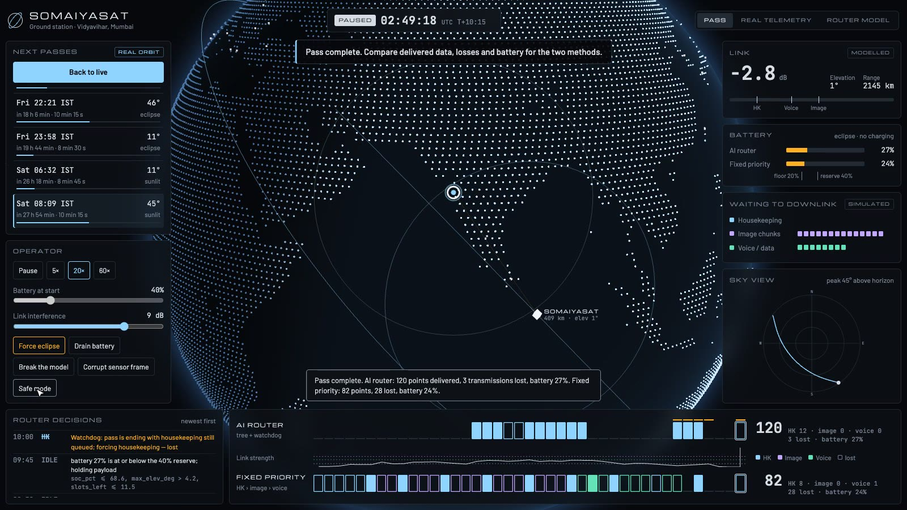

SomaiyaSat is a PocketQube, a satellite about 5 cm across, planned by Somaiya Vidyavihar. A satellite this small has three hard limits:
It can reach the ground station for only about 10 minutes at a time, while it passes overhead.
The radio link is weak at the start and end of each pass and strong in the middle.
The battery is small, and every transmission drains it.
It has three kinds of data waiting: housekeeping (small health reports, the most important), image chunks (large, need a strong link) and voice/data (in between). In each moment of the pass it must choose one to send, or stay silent. The traditional answer is a fixed order: housekeeping, then image, then voice, without looking at the link or the battery. That sends images when they cannot get through and keeps transmitting until the battery is nearly empty.
What I built

The dashboard during a replayed pass over Mumbai with heavy interference. Top tape: AI router. Bottom tape: fixed priority. A hollow box is data that was sent and lost.
A router service that takes link strength, battery level and the queue, and returns what to send, with the reason.
A ground-station dashboard: a 3D globe with the satellite on its real orbit, the pass list for Vidyavihar, and both methods running side by side.
Operator controls to add interference, force an eclipse, drain the battery, break the model, corrupt a sensor frame or switch to safe mode, and watch each method cope.
One Docker image that runs the same on a laptop and in the cloud.
Why it is useful
More of the important data arrives. On 300 test passes the AI delivered 92.5% of housekeeping against 84.2% for the fixed order.
Far less transmission is wasted. 11.4% of the AI's transmissions were lost on a weak link, against 39.1%.
It can be tested before launch. The use case lists testing "without access to a live orbital environment" as a challenge; this replays real pass geometry on the ground.
The decisions can be checked. Every choice is logged with its reason, and a safety rule overrides the AI when it misbehaves.
How the solution works
InputReal orbit of a stand-in satellite. Link strength from the real distance. Battery and queue, simulated.
→
Processing: the routerA small decision tree picks housekeeping, image, voice or idle every 15 seconds. A watchdog checks each answer before it reaches the radio.
→
OutputThe decision and its reason, the data delivered or lost, and the battery left, drawn on the dashboard.
A solver finds the best schedule. For 900 practice passes, a dynamic-programming solver that knows the whole pass in advance works out the best choice at every step. It is too heavy to fly and needs knowledge of the future, so it is used only as a teacher.
A small model learns to copy it. A decision tree is trained on 32,569 of those choices using only what the satellite can know at that moment: link strength, elevation, time left, battery, sunlight and queue sizes. The trained tree is an 18 kB file of yes/no questions and takes about 2 microseconds per decision, with no machine-learning library at run time.
A watchdog guards it. If the model gives an invalid answer, asks to send from an empty queue, would take the battery below the 20% floor, or leaves housekeeping unsent as the pass ends, the watchdog replaces the answer with a simple safe rule. The operator can also force safe mode.
The dashboard shows it. The browser draws the globe and the satellite; the server plans the pass with both methods on the same link conditions, so the comparison is fair.
Results on 300 unseen passes
Method
Value delivered per pass
Housekeeping delivered
Transmissions lost
Battery at end
Fixed priority (the traditional rule)
116.8
84.2%
39.1%
50.9%
Safe rule alone (what the watchdog falls back to)
117.5
86.6%
11.6%
58.4%
AI tree with watchdog
127.6
92.5%
11.4%
56.6%
Solver (upper bound, cannot fly)
133.5
95.3%
11.1%
55.9%
Value: housekeeping 10 points, image chunk 4, voice 2. The tree agrees with the solver on 75.1% of decisions. These figures come from simulated scenarios on real pass geometry; none were measured on a satellite. The AI does not win every single pass on delivered data: on a low battery it sends less on purpose and ends with more charge.
What is real and what is simulated
Real: the orbit, pass times, sky track and eclipse, computed from the tracking data of CroCube (NORAD 62394), a CubeSat used as a stand-in because SomaiyaSat has not flown.
Real: the "Real telemetry" tab: 1,798 frames from 150 passes heard by 59 volunteer ground stations (SatNOGS network), decoded here.
Modelled: link strength, from the real distance plus random fading.
Simulated: battery, the data queue, and whether each transmission arrives.
Cloud side
The app is one Docker image (FastAPI service plus the dashboard). It runs locally and on Azure Container Apps at 0.25 vCPU and 0.5 GB, scaling to zero when idle. The same image is the planned workload for the course experiments on containers, performance simulation, right-sizing and cost comparison.
Try it in two minutes
Open the live dashboard. Drag the globe; the satellite is where it really is now.
Click Play next pass and compare the two tapes.
Set Link interference to 5 dB and watch fixed priority lose data.
Click Break the model: the watchdog takes over, shown in amber.
Click Corrupt sensor frame: the server rejects the bad reading.
housekeeping image voice sent but lost
The first load after an idle period takes a few seconds while the cloud container starts.
Limits and acknowledgement
The link and battery models are simplified, and only one ground station is modelled.
No personal data is used; all inputs are public satellite data or synthetic.
AI assistance (Claude) was used to write code and this summary. Outputs were run and checked, and the figures above come from the project's own evaluation.